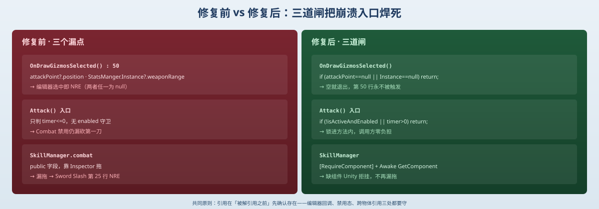

一句话说清这天的内容
Day 10 收尾时列了 6 个已知脆弱点，今天不写新功能，先把其中「战斗相关」的三条一次焊死：Player_Combat 的 gizmo 空引用、没内部 enabled 守卫，以及 SkillManager.combat 靠 Inspector 漏拖。每条都先讲「为什么会炸」，再给「修了之后长什么样」的真实代码。
先说结论
这三条崩溃看似各不相干，根因其实同一个——「写完逻辑」≠「接对生命周期」：
- gizmo 那是在编辑器回调里访问了还没初始化的引用；
Attack()漏第一刀，是把enabled=false当成锁、却没在方法内部真正拦；combat漏拖，是跨物体引用靠人手拖、而不是让代码自己取。
修法就一句口诀：「引用在被解引用之前，先确认它存在」——编辑器回调判空、Attack() 入口判 isActiveAndEnabled、跨物体引用 RequireComponent + Awake 自取。
一、改动清单（只动了 2 个脚本）
| 脚本 | 改了什么 | 对应脆弱点 |
|---|---|---|
Player_Combat.cs | OnDrawGizmosSelected 加 null 守卫；Attack() 入口加 isActiveAndEnabled 守卫 | gizmo 空引用 / enabled 漏锁 |
SkillManager.cs | combat 由 public 拖拽改 private + [RequireComponent] + Awake 自取 | 引用漏拖 |
PlayerMovement.cs | 调用处 && player_Combat.enabled==true 同步删掉（锁已进 Attack() 内部） | 配套清理 |

二、修复①：gizmo 空引用（OnDrawGizmosSelected）
OnDrawGizmosSelected 在编辑器里选中物体时就会执行，不进 Play 模式、Awake/Start 也不跑。所以它访问的两个东西，在编辑期很可能还是 null：
attackPoint：public Transform，靠 Inspector 拖，没拖就是 null；StatsManger.Instance：单例在Awake里才赋值，编辑期没运行就还是 null。
于是第 50 行 attackPoint.position / .weaponRange 一解引用就 NRE。
before
private void OnDrawGizmosSelected()
{
Gizmos.color = Color.red;
Gizmos.DrawWireSphere(attackPoint.position, StatsManger.Instance.weaponRange);
}after
private void OnDrawGizmosSelected()
{
if (attackPoint == null || StatsManger.Instance == null) return;
Gizmos.color = Color.red;
Gizmos.DrawWireSphere(attackPoint.position, StatsManger.Instance.weaponRange);
}提示
这只是「让 gizmo 不报错」。真正的根因还是 attackPoint 槽位要记得在 Inspector 拖上 AttackPoint 子物体——判空是兜底，不是免拖许可证。
三、修复②：enabled 真锁（Attack 内部守卫）
之前 Player_Combat 开局 enabled=false，但 Attack() 是 public 方法，enabled 只停 Update、不挡方法调用；Attack() 内部又只判 timer<=0，timer 初始 0 → 第一刀在禁用态就漏出去了，全靠 PlayerMovement 调用处那句 && player_Combat.enabled==true 兜着。
正确做法是把锁搬进方法内部，调用方不用替它担责：
before
public void Attack()
{
if(timer<=0)
{
anim.SetBool("isAttacking", true);
timer = cooldown;
}
}// PlayerMovement.Update()
if(Input.GetButtonDown("Slash") && player_Combat.enabled==true)
player_Combat.Attack();after
public void Attack()
{
if (!isActiveAndEnabled || timer > 0) return; // 锁进方法内部
anim.SetBool("isAttacking", true);
timer = cooldown;
}// PlayerMovement.Update()
if (Input.GetButtonDown("Slash"))
player_Combat.Attack(); // 禁用态自然被 Attack() 自己挡掉技巧
isActiveAndEnabled 同时查「物体激活」和「组件启用」，比单独看 enabled 更稳。调用方那句 enabled==true 现在成了冗余，删掉反而更干净——守卫只该有一处，放在离数据最近的地方。
四、修复③：引用自动取（SkillManager.combat）
SkillManager 的 combat 是 public Player_Combat combat;，靠 Inspector 拖。漏拖 → 点「Sword Slash」走到 combat.enabled = true 第 25 行直接 NRE。对照 Enemy_* 系列在 Start() 里 GetComponent 自取，从没出过这种错——所以治本写法是让组件「自己保证引用存在」：
before
public class SkillManager : MonoBehaviour
{
public Player_Combat combat; // 靠拖，漏拖就 NRE
// ...
case "Sword Slash":
combat.enabled = true; // 第 25 行
break;
}after
[RequireComponent(typeof(Player_Combat))]
public class SkillManager : MonoBehaviour
{
private Player_Combat combat;
private void Awake()
{
combat = GetComponent<Player_Combat>(); // 自动取，不靠拖
}
private void OnEnable()
{
SkillSlot.OnAbilityPointSpent += HandleAbilityPointSpent;
}
private void OnDisable()
{
SkillSlot.OnAbilityPointSpent -= HandleAbilityPointSpent;
}
private void HandleAbilityPointSpent(SkillSlot slot)
{
string skillName = slot.skillSO.skillName;
switch(skillName)
{
case "Max Health Boost":
StatsManger.Instance.UpdateMaxHealth(1);
break;
case "Sword Slash":
combat.enabled = true; // 现在 guaranteed 非空
break;
default:
Debug.LogWarning("Error" + skillName);
break;
}
}
}提示
[RequireComponent(typeof(Player_Combat))] 让 Unity 在挂 SkillManager 时强制要求同物体上有 Player_Combat：没有就直接拒绝添加（Inspector 里也自动补上），从源头消灭「漏拖」。配合 Awake 里 GetComponent，引用在第一次被用到之前就一定存在。
五、整体设计思路：把「防御」放进生命周期里
今天三条修复，本质上都是把 Day 10 复盘里的那句口号落地：
| 反模式（Day 10） | 今天的落地点 |
|---|---|
| 静态事件 / 广播打到未初始化对象 | gizmo 在编辑器回调里先判 Instance==null |
| public 字段靠 Inspector 漏拖 | RequireComponent + Awake 自取，编译/挂载期就拦 |
把 enabled=false 当锁 | 守卫搬进 Attack() 内部，方法自锁 |
| UI 与数据不同步 | （本日未动，留给后续） |
一句话：防御不该靠「调用方记得检查」，而该靠「被调用方/被访问方自身保证」——要么自己判空，要么自己取引用，要么自己锁门。
六、明天要补的洞（Day 10 剩下的 4 条）
战斗相关三条焊死了，Day 10 的 6 个脆弱点还剩：
HandleSkillMaxed遍历 24 格没对skillSO判空（满级 4/5 那坑的治本办法）。ToggleSkillTree.statsCanvas变量名误导（实际控技能面板，该改名）。- 技能树还是扁平列表，
prerequisiteSkillSlots没真配置（点格子解锁关系还是摆设）。 - 显示 / 数值层依然硬编码：
StatsCanvas.alpha=1、技能面板常显、availablePoints=10写死、升级没真给点数。
Day 12 计划：先焊死 #1（判空）和 #4（把点数 / 面板显隐接到数据），#2 改名顺手做，#3 留到技能树重构那一轮。
一句话总结
Day 11 没写新功能，而是把 Day 10 列的 6 个脆弱点里「战斗相关」的三条一次焊死——OnDrawGizmosSelected 加 null 守卫（编辑器回调先判 attackPoint/Instance）、Attack() 把 enabled 守卫搬进方法内部（isActiveAndEnabled + timer）、SkillManager.combat 用 [RequireComponent] + Awake 自取替代 Inspector 拖拽——共同原则是「引用在被解引用之前先确认存在」，把防御从「调用方记得查」下沉到「被调用方自身保证」，剩下 4 条脆弱点留给 Day 12。